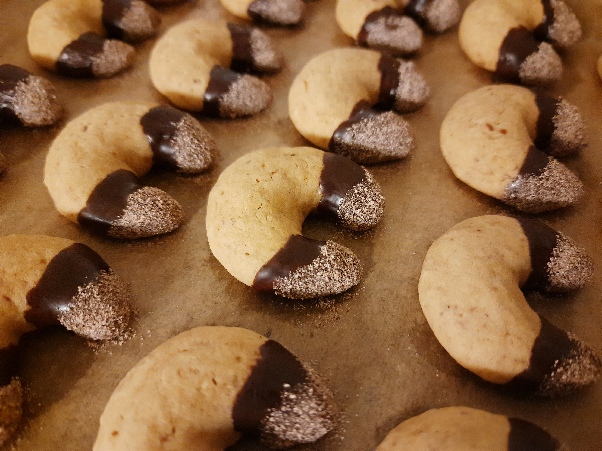
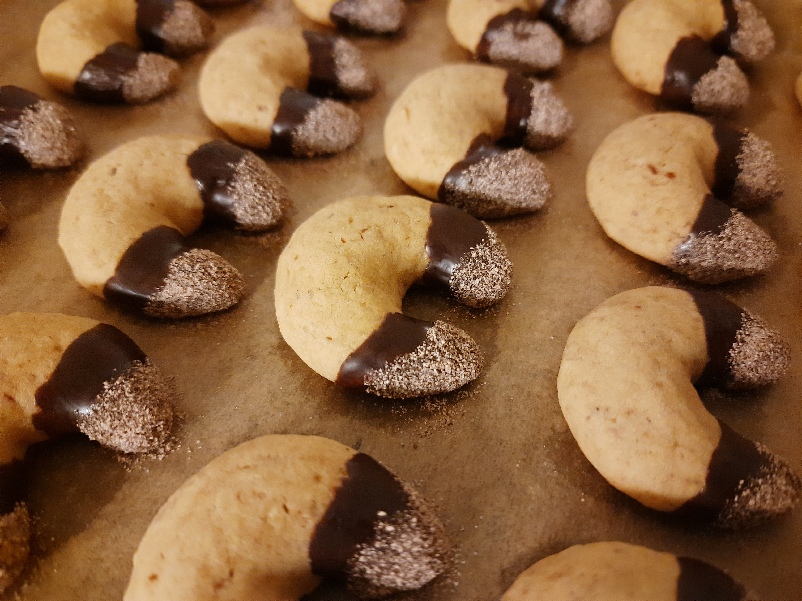

Wenn du keine Lust mehr auf lange Formeln hast, die mehr Buchstaben enthalten als Zahlen, dann geh doch mal zum Bäcker oder zur Catrin!
Gerade zur Weihnachtszeit ist für alle Geschmäcker was dabei:

 

Aber auch unter dem Jahr, hat man gute Chancen einen Zuckerschock zu bekommen:


Wenn man etwas mehr Ablenkung braucht, lohnt es sich selbst die Backschüssel zu füllen und je nach benötigter Pausenzeit ein Rezept zu wählen.